2Sun
Still in Texas
Normal Sunday. Working this one would have bought back a vacation day — we're skipping that.
Two weeks out of Knightsen, with a two-night run up to Tahoe in the middle.
Normal Sunday. Working this one would have bought back a vacation day — we're skipping that.
Last day at home. Bags, chargers, Ellie's booster.
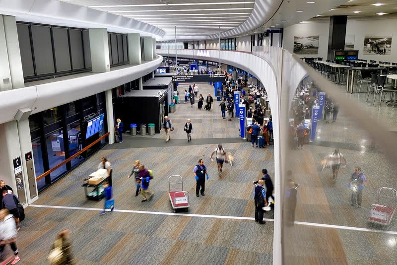
Out of Houston Hobby at 9:40am, change planes in Phoenix, into SFO at 1:15pm. Then the van and the drive to Knightsen (~55 mi) — at the house mid-afternoon. Groceries.
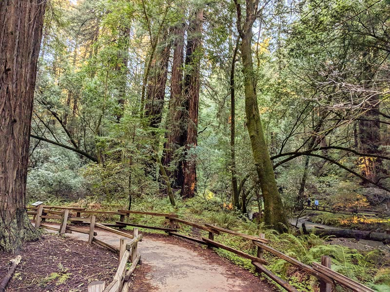
Redwoods in the morning, beach in the afternoon. Coast redwoods you can't see anywhere else.
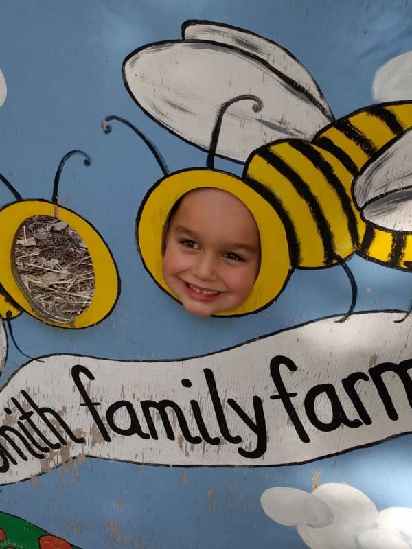
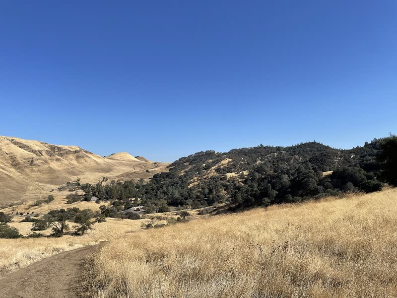
Close-to-home day. Pick fruit in the morning, then the underground mine tour at Black Diamond in the afternoon.
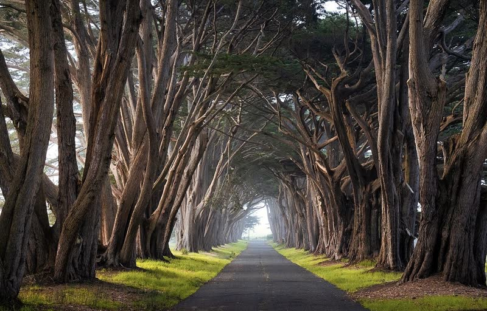
Cypress Tree Tunnel, the tule elk, and a beach. Pick two or three stops and don't rush it.
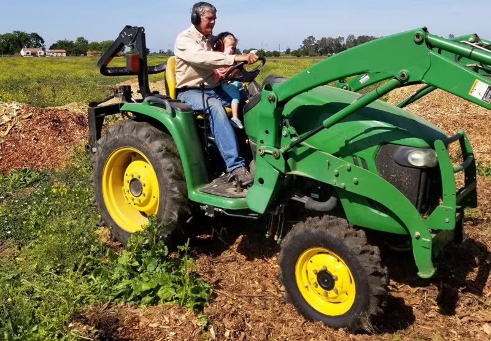
Nothing booked. Pool, the tractor, and whatever else the place turns up. Dad's working.
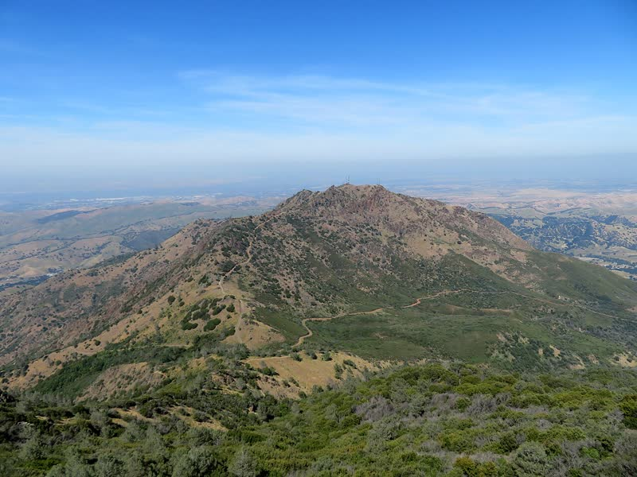
Church in the morning, then something local. Mt. Diablo in the evening if there's steam left — on a clear day you can see the Sierra from the top.
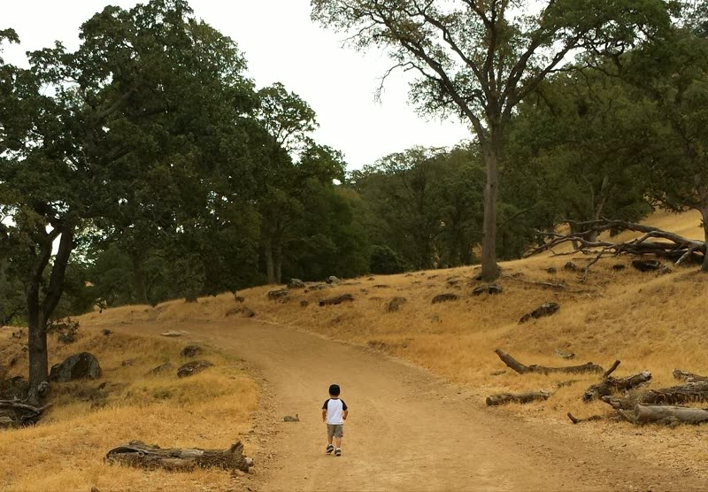
Easy day close to home. A hike out at Round Valley Regional Preserve in the oak grassland — one of Dad's old favorites.
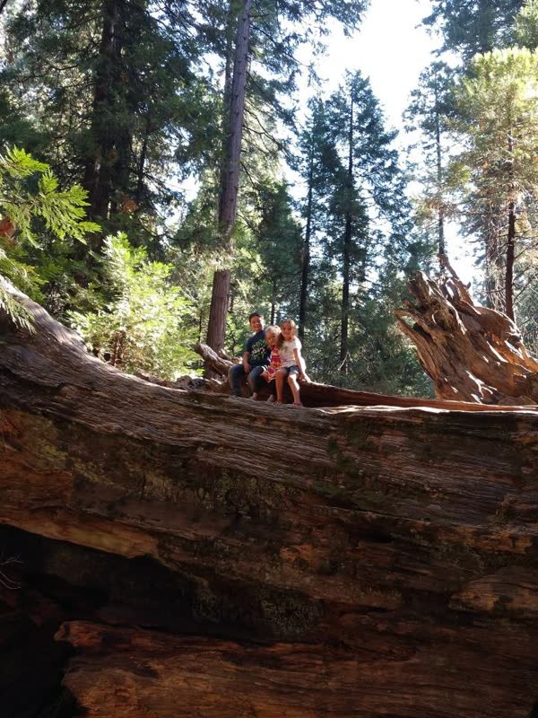
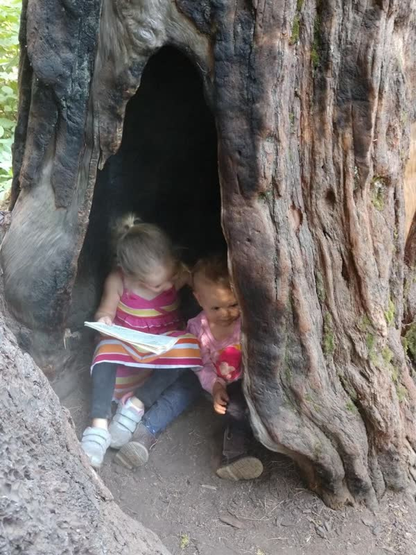
Giant sequoias — the fat ones, not the tall skinny redwoods from last week. Easy loop trail through the North Grove.
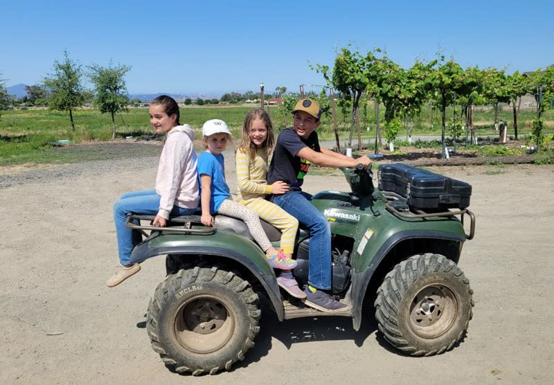
Pool, laundry, and get everything staged for two nights in the mountains.
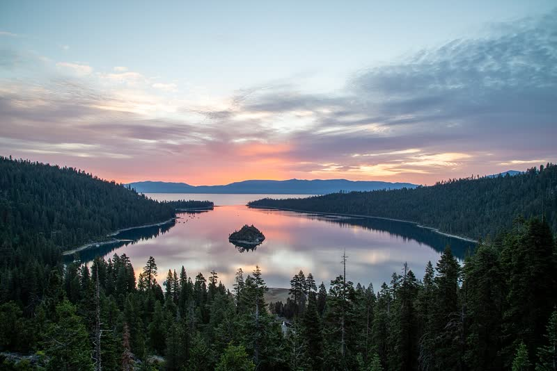
About 3½ hours up. Check into Pine Cone the Awesome in Sunnyside — all ten of us plus Beth, A'maya and Tyler meeting us there.
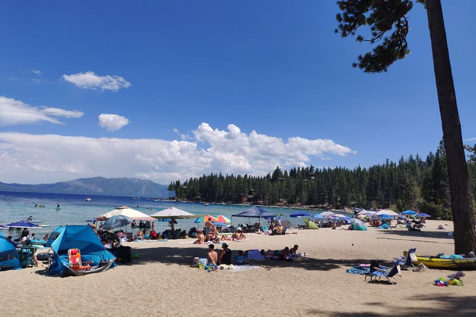
Meeks Bay for swimming — sand and shallow water, and it's just down the west shore from the cabin. Then Emerald Bay for the view, and the walk down to Vikingsholm if everyone's up for the climb back. Pope or Kiva are the south-shore option if we end up round that side.
One last morning at the lake, then the drive back down to Knightsen.
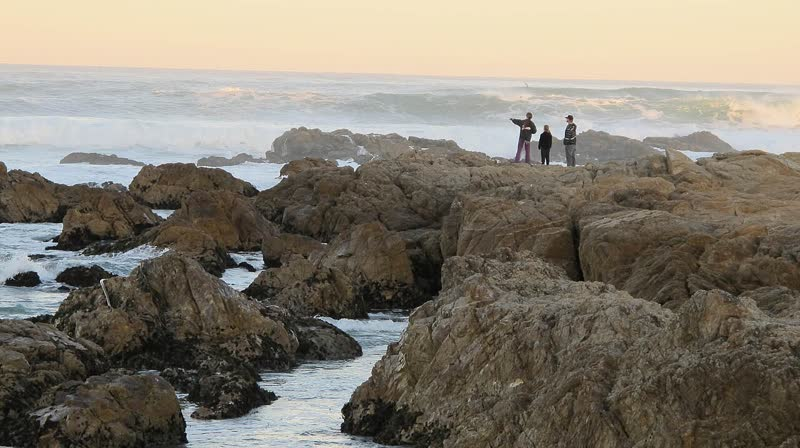
Down after a late-morning start. Aquarium in the early afternoon, then the tide pools at Pacific Grove / Asilomar as the water drops through the evening. Skipping church.
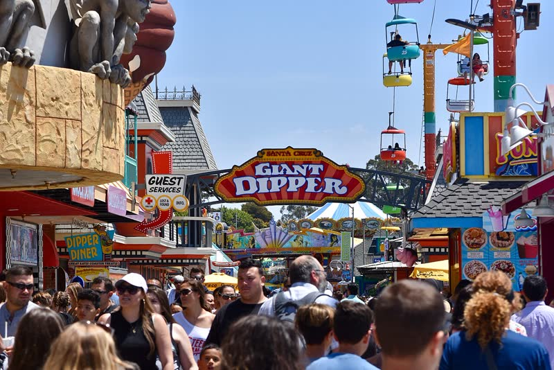
On the calendar as a maybe. Leaning toward skipping it so we're not doing a mountain of laundry the night before we fly.
Van back to SFO by noon. Wheels up 1:55pm, change planes in Dallas, into Houston Hobby at 9:35pm. Long one.
A worked Saturday covers an earlier day in its own week; a worked Sunday covers a later one.
| Week | Days off | Covered by | Charged |
|---|---|---|---|
| Aug 2–8 | 4th, 5th, 7th | Sat the 8th | 2 |
| Aug 9–15 | 13th, 14th, 15th | Sun the 9th | 2 |
| Aug 16–22 | 16th, 18th | Sat the 22nd | 1 |
| Total charged | 5 days · 40 hrs | ||
The things that will bite us if nobody handles them.